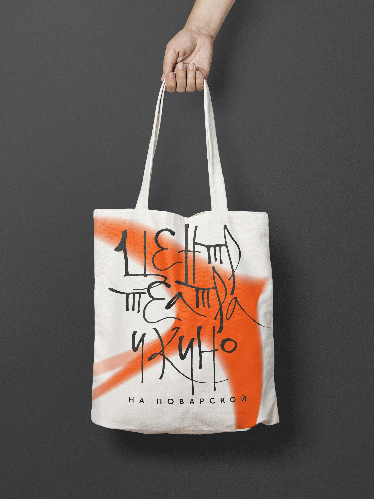
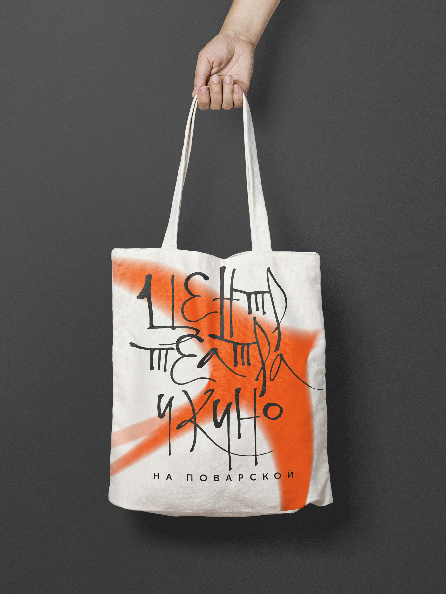

Создание центральной площадки для проведения эксклюзивных международных мероприятий, а также место встречи профессиональных авторов, художников, режиссёров, продюсеров, ценителей классического искусства и молодых талантов, которые представляют российское искусство.
Обмен опытом и ценностями с международным творческим сообществом. На базе Центра будут проводиться престижные международные фестивали и воркшопы с профессионалами кино и театра со всего мира.

Графический язык на основе на каллиграфии в стиле древнерусской скорописи и иллюстрациях.

 

- Дидактические;
- Образовательные;
Цели создания айдентики:
- Для зрителей
- Для перподавателей
- Для студентов